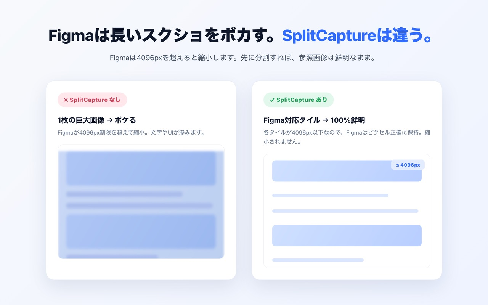
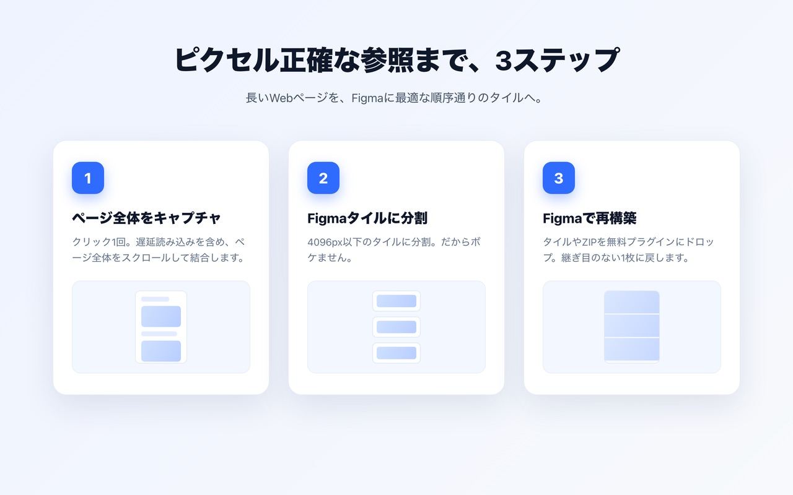
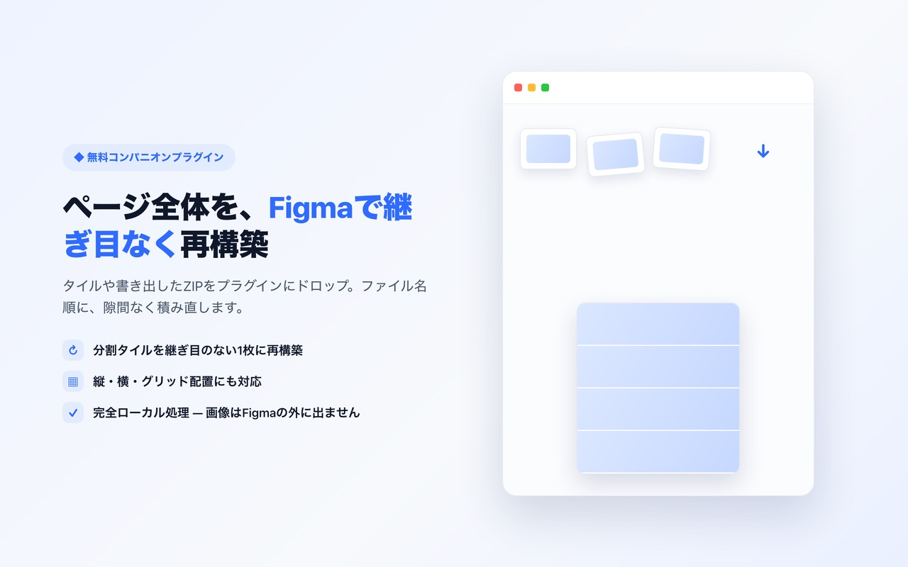

Figmaでスクショがぼやける原因と、フルページのスクリーンショットを鮮明なまま貼る方法
結論: Figmaは1辺が4096pxを超える画像を縮小するため、縦に長いフルページのスクリーンショットは取り込んだ時点でぼやけます。Chrome拡張機能SplitCaptureでページを4096px以下のタイルに分割し、無料のFigmaプラグインで継ぎ目のない1枚に再構築すれば、鮮明なまま扱えます。
Figmaでスクショがぼやける原因
ぼやける原因は、Figmaで扱える画像の最大サイズが4096 × 4096pxで、それを超える画像は取り込み時に縮小されることです。一般的なランディングページを2倍の画素密度でキャプチャすると、高さは10,000〜20,000pxに達します。高さ12,000pxの画像を4096pxに収めるため、Figmaは約3分の1に縮小します。その結果、小さな文字は読めなくなり、細い線は消えます。
ブラウザや画像ビューアでは問題なく見えるため、Figma上で拡大するまで劣化に気づきにくいのが厄介な点です。

フルページのスクショをぼかさずにFigmaに貼る方法（3ステップ）
ページをタイルでキャプチャし、無料プラグインにドロップすれば、プラグインが鮮明な1枚のページに再構築します。所要時間は1分ほどで、費用はかかりません。

1. 「画像を分割」をオンにしてページをキャプチャする
Chromeでページを開き、SplitCaptureのアイコンをクリックして、「画像を分割」をオンのまま「ページをキャプチャ」を押します。遅延読み込みのコンテンツも含めてページ全体をスクロールし、4096px以下（初期値4000px）のタイルに分けて、まとめてZIPでダウンロードします。
2. 無料のFigmaプラグインを開き、タイルをドロップする
Figmaで「SplitCapture: Screenshot Arranger」を起動し、ZIPファイル（またはPNGのタイル）をドラッグ＆ドロップします。ZIPを展開する必要はありません。
3. プラグインが1枚の画像に再構築する
プラグインがファイル名順にタイルを並べ替え、隙間なく順番通りに積み直して、1枚の長いページとしてグループ化します。各タイルは4096px以下なのでFigmaで縮小されず、再構築したページは元と同じ鮮明さです。

分割の仕組み
SplitCaptureは、フルページのキャプチャを1枚あたり4096px以下の横長のタイルに切り分けます。そのためFigmaが縮小する理由がありません。
- タイルの高さ: 初期値は4000px。Pro版では4096px以下の任意の高さに設定できます。
- 継ぎ目なし: タイルはピクセル単位で正確に切り分け、初期設定では重なりもありません。積み直すと、行の重複や欠けのない元のページになります。
- 原寸のまま: タイルは元のピクセルを保ちます。例外は幅が4096pxを超えるキャプチャ（大型モニターを2倍の画素密度で使う場合など）で、Figmaに配置できるよう縦横比を保って縮小します。
- 連番のファイル名: タイルには番号が付くため、プラグインが正しい順番を判断できます。
- すべてローカル処理: キャプチャと分割はブラウザ内で完結し、何もアップロードしません。
他の方法との比較
縦長のスクショをFigmaに直接貼るのが最も手軽ですが、この方法ではぼやけます。手作業で切り分ければ鮮明さは保てますが、1ページに数分かかります。SplitCaptureとプラグインなら、数クリックで鮮明なまま取り込めます。
| 方法 | Figmaで鮮明か | 手間 |
|---|---|---|
| フルページのスクショをそのまま貼る | いいえ（高さ4096px超は縮小される） | 少ない |
| 一般的なフルページ拡張機能＋画像編集ソフトで分割 | はい（すべて4096px以下に切れば） | 多い（切り出し・書き出し・位置合わせを手作業） |
| タイルをプラグインなしでFigmaにドロップ | はい | 中程度（散らばったタイルを手で並べ直す） |
| SplitCapture＋無料Figmaプラグイン | はい（全タイルが4096px以下） | 少ない（キャプチャしてZIPをドロップするだけ） |
無料版とPro版
SplitCaptureは無料で使え、分割キャプチャは1日3回までです。Pro版は5米ドルの買い切り（サブスクリプションなし）で、購入後14日以内なら全額返金します。
| 機能 | 無料版 | Pro版（5米ドル・買い切り） |
|---|---|---|
| フルページキャプチャ（分割なし） | 無制限 | 無制限 |
| Figma向け分割キャプチャ | 1日3回 | 無制限 |
| コンポーネント（要素）キャプチャ | 無制限 | 無制限 |
| 分割の高さ・重なりの設定 | — | ✓ |
| Figmaプラグイン | 無料 | 無料 |
1日の回数はお使いの端末の日付で0時にリセットされ、分割キャプチャが成功したときだけ消費されます。
よくある質問
Figmaに貼ったスクリーンショットがぼやけるのはなぜですか？
Figmaが扱える画像は1辺4096pxまでだからです。高さ10,000pxのフルページスクショのように大きな画像を取り込むと、Figmaは4096pxに収まるよう縮小するため、文字やUIの細部がぼやけます。すべての画像を4096px以下にすれば縮小は起きません。
Figmaで扱える画像の最大サイズは？
4096 × 4096ピクセルです。縦横どちらかがこれを超える画像は、取り込み時に縮小されます。
Figmaプラグインは必須ですか？
必須ではありませんが、手作業が不要になります。タイルをそのままFigmaにドロップすると散らばって配置され、手で位置を合わせる必要があります。無料プラグイン「SplitCapture: Screenshot Arranger」なら、順番通り・隙間なく1枚のページに一度で再構築できます。
SplitCaptureは無料ですか？
はい。無料版では、フルページキャプチャとコンポーネントキャプチャが無制限、分割キャプチャが1日3回まで使えます。SplitCapture Proは5米ドルの買い切り（サブスクリプションなし）で、分割キャプチャが無制限になり、分割の高さと重なりを自由に設定できます。購入後14日以内なら全額返金します。Figmaプラグインは無料です。
スクリーンショットはどこかにアップロードされますか？
されません。Chrome拡張機能はキャプチャと分割をすべてブラウザ内で行い、Figmaプラグインはネットワークにアクセスしません。スクリーンショットがお使いのパソコンとFigmaの外に出ることはありません。
ページの幅が4096pxを超える場合はどうなりますか？
「画像を分割」がオンの場合、すべてのタイルが4096px以内に収まりFigmaに配置できるよう、キャプチャ全体を縦横比を保って縮小します。これは大型モニターを2倍の画素密度で使っている場合など、ごく横長のキャプチャのときだけです。それ以外はすべて原寸のまま保存されます。
使ってみる
キャプチャと分割はChrome拡張機能で、1枚への再構築は無料のFigmaプラグインで行います。
お問い合わせ: info@big-aro.com